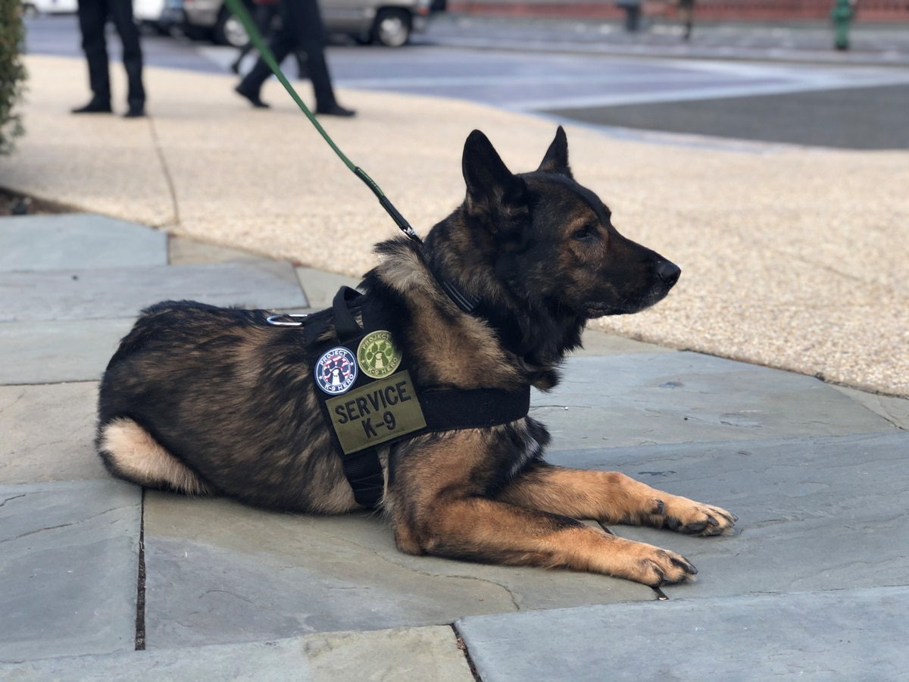

The specific interest in honoring the dogs and people who excelled in the field trial sport began in the late 1930's.
Those involved knew that time and careful consideration would be needed in
formulating the rules and regulations needed to bestow an honor of excellence on dogs
and their owners, trainers and handlers.
We are going to honor three special dogs each year
according to the competetion. The three award categories
will include-
Categories
Working Dog
A working dog is a dog used to perform practical tasks, as opposed to pet or companion dogs.

Hero Dog
A Hero dog is a dog that has performed extraordinarily in coming to the aid/saving of the prople around it.

Companiono Dog
A companion dog is a dog that does not work, providing only companionship as a pet, rather than usefulness by doing specific tasks.